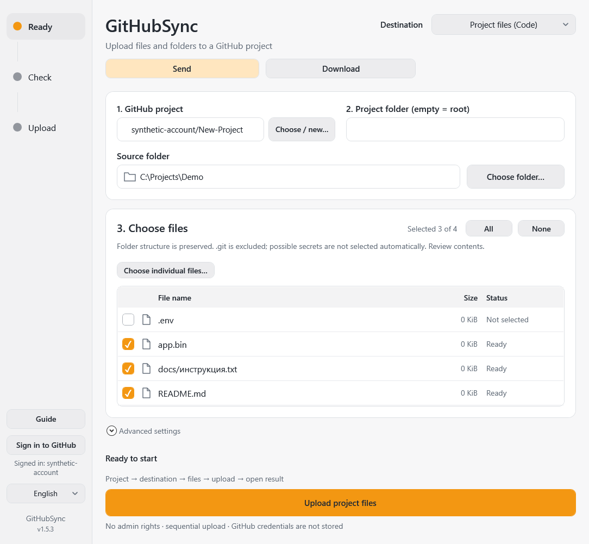

Windows 10/11 · x64
GitHubSync
Upload files to GitHub and download project files or release attachments after your confirmation.
Release · 1.5.3Before you startWindows PowerShell 5.1 and .NET Framework 4.6.2+ with WPF; Git/GCM are bundled. EXE is unsigned. Uploads require internet and repository write access.


How it works
- Select a repository
- Review files
- Upload to Code or Releases
First steps
Verify SHA-256, extract the complete portable package and open GitHubSync.exe. Choose Send/Download, repository, destination and files, then confirm.